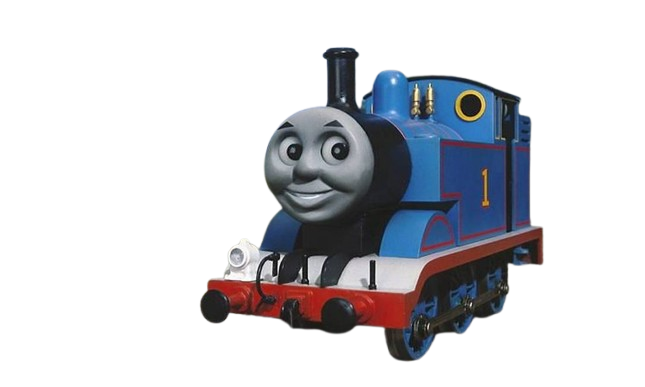

Thomas a Locomotiva

Thomas, o Trem, é uma locomotiva tanque antropomórfica fictícia que se originou dos livros infantis britânicos da série "The Railway Series" ,
criada e escrita por Wilbert Awdry com seu filho Christopher , publicada pela primeira vez em 1945. Thomas opera na Ferrovia Noroeste do Gordo Controlador , na Ilha de Sodor .
Ele se tornou o personagem mais popular da série e é o protagonista titular da adaptação para a televisão "Thomas e Seus Amigos" , que se expandiu e se tornou uma franquia multimídia .